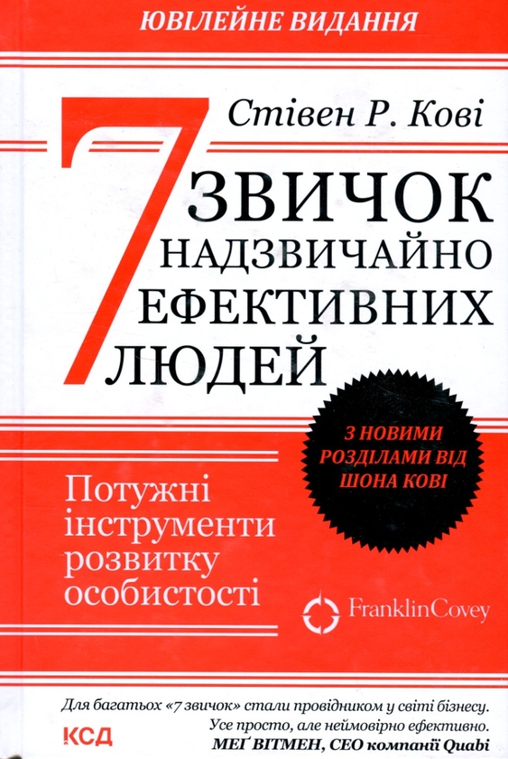
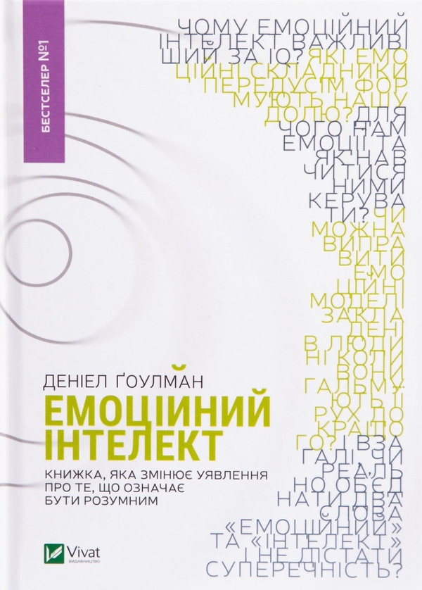
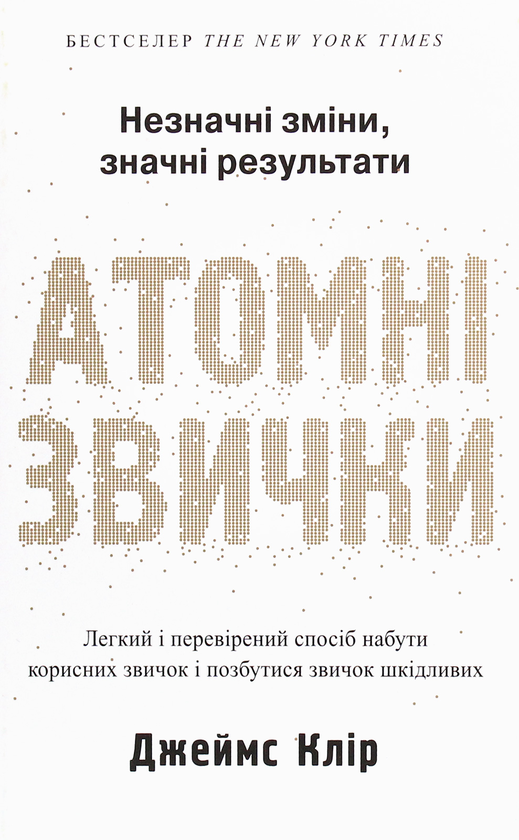
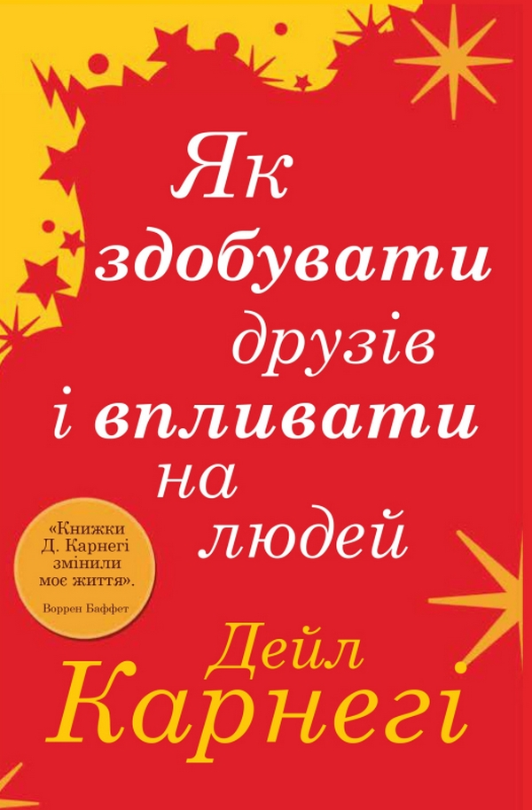
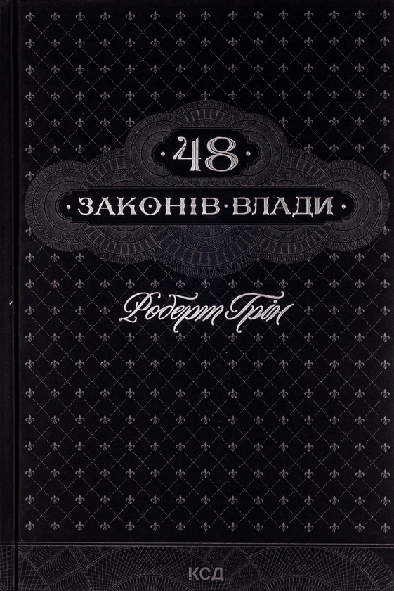

Впевнено крокуючи шляхом особистого зростання та досягнень, книги у жанрі "допоможи собі сам" стають важливим компаньйоном на цьому непередбачуваному, але захопливому подорожі. Їхнє значення у сучасному світі стає все більш невід'ємним, адже вони не просто надають поради, але й відкривають двері у світ внутрішнього самовдосконалення та розуміння. Від глибоких внутрішніх трансформацій до практичних порад щодо побудови успішних відносин і досягнення поставлених цілей - кожна сторінка цього жанру відкриває нові можливості для того, щоб кожен із нас став кращою версією себе. Пропонуємо вам відчути силу цього жанру разом із нашим вибором найкращих книг у жанрі "допоможи собі сам". Дозвольте собі відкрити сторінки, що наповнені мудрістю, натхненням та практичними рекомендаціями, які допоможуть вам зробити кожен день більш успішним та задоволеним. Нехай ця подорож в світ книжок "допоможе собі сам" стане першим кроком до нових досягнень, які змінять ваше життя до найкращого.
| Назва книги | К-сть проданих копій | Ціна книги |
|---|---|---|
| 7 звичок надзвичайно ефективних людей | 40 мільйонів | 350 ₴ |
| Емоційний інтелект | 40 мільйонів | 380 ₴ |
| Атомні звички | 15 мільйонів | 375 ₴ |
| Як здобувати друзів та впливати на людей | 30 мільйонів | 250 ₴ |
| 48 законів влади | 1.2 мільйона | 400 ₴ |

Анотація
Аби досягти поставленої мети, недостатньо бути професіоналом. Проте успіх, особистісне зростання та прийняття правильних рішень гарантовані, якщо ви оволодієте всього 7 навичками. Саме їх описав і структурував у своєму бестселері Стівен Кові. Перетворивши ці навички на звички, кожен може суттєво підвищити рівень життя й повністю реалізувати власний потенціал.
Детальні покрові інструкції допоможуть вам:
За 30 років успішних перевидань однієї з кращих бізнес-книжок світу Стівен Кові надихнув на рішучі зміни у житті мільйони людей.
Огляд даної книги на Youtube
Анотація
Залежність між інтелектом і життєвим успіхом зрозуміла і майже аксіоматична. Але ж на життєві здобутки впливає й емоційна сфера людини.

Анотація
Незначні зміни, значні результати! Дізнайтеся секрет тривалих результатів! Нашпигована заснованими на фактах стратегіями із самовдосконалення, книга "Атомні звички" навчить, як набути манер і навиків, що працюватимуть на вас, а не проти вас. У книзі Джеймс Клір ділиться надзвичайно цікавою і по-справжньому продуктивною методикою напрацювання корисних звичок. В її основі лежить поняття чотириступеневої моделі звичок (подразник, прагнення, відгук, винагорода), а також чотири породжені цією моделлю закони зміни поведінки. Викладений матеріал підтверджується результатами наукових досліджень, проте книгу слід трактувати не як наукову розвідку, а як посібник з експлуатації, що містить мудрі практичні поради та пояснення механізмів створення і змінювання власних звичок. Єдиного правильного способу набуття корисних звичок, звісно, не існує, але автор пропонує найкращий із відомих підхід, який спрацює незалежно від того, з чого саме ви починаєте і що саме намагаєтеся змінити.
Огляд даної книги на Youtube
Анотація
Вже майже 80 років поради автора цієї книжки допомагають людям здобувати друзів, завойовувати довіру, будувати міцні стосунки. Надзвичайно складні речі пояснюються простими і доступними словами. Ці невигадливі рекомендації допоможуть вам:
Ви можете претендувати на роботу своєї мрії - і ОТРИМАТИ її.
Ви можете прийняти свою роботу - і ПОКРАЩИТИ її.
Ви можете взяти під контроль будь-яку ситуацію - і змусити її ПРАЦЮВАТИ НА ВАС!

Анотація
Сорок вісім хитрих, безжальних, повчальних законів влади від Роберта Гріна, які стануть у пригоді кожному, хто прагне досягати вершин. Як навчитися долати перешкоди й перетворювати їх на успіх? Де черпати енергію та натхнення для сильних вчинків? Як подолати страх і змусити долю грати за вашими правилами? Книжка навчить вас розставляти пріоритети, вивчати й розуміти людей, опановувати власні емоції й не говорити більше, ніж потрібно. Практичні поради, що ґрунтуються на 48 законах Гріна, допоможуть усім, хто жадає успіху, прагне впевнено йти до мети й завойовувати світ. Закони влади і поради щодо їх застосування Яскраві приклади успіхів та найгучніших провалів керівників в історії влади Як перетворити перешкоди на можливості Лінія поведінки для керівників та підлеглих Правила владної гри
Огляд даної книги на YoutubeЯк часто надсилати підбірку?
Який жанри книг вам підбирати?